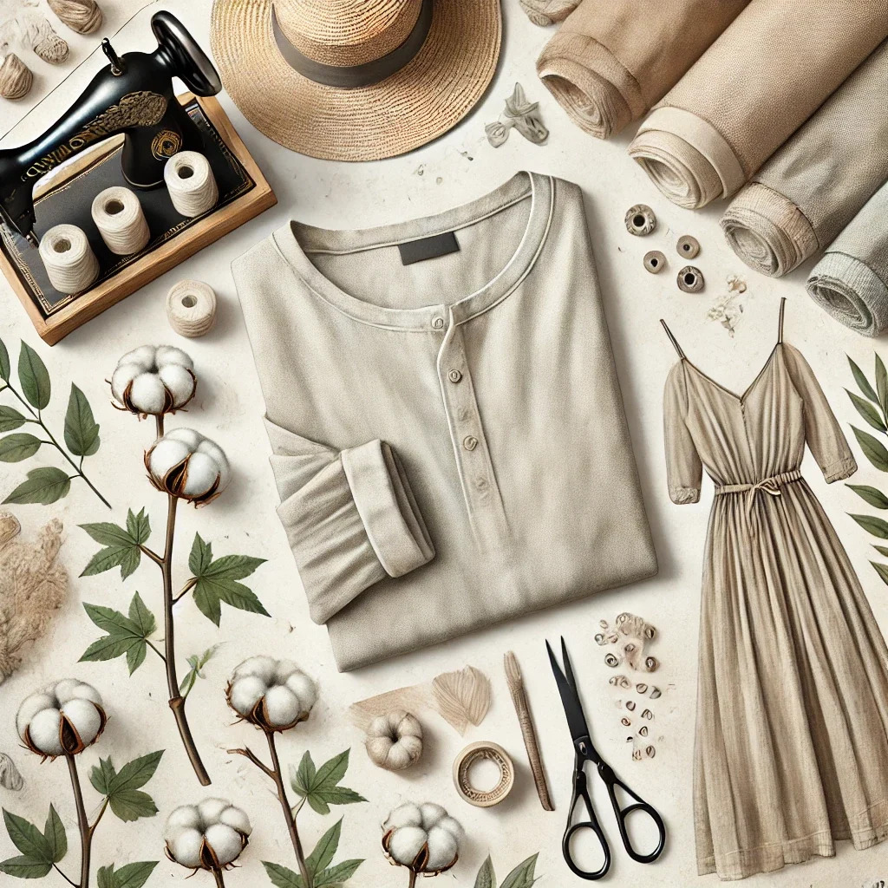

Our Little Story 🌷
Tentang Nayla's Fashion and Craft
Nayla's Fashion and Craft berawal dari ketertarikan terhadap dunia fashion dan kerajinan tangan.
Kami adalah toko fashion dan kerajinan lokal yang menghadirkan pilihan busana serta aksesori bernuansa soft dan feminin.
Setiap koleksi dipilih untuk memberi rasa nyaman sekaligus menonjolkan keunikan karya lokal.
Visi 🌸
Menjadi ruang belanja yang mendukung kreativitas lokal dan menghadirkan produk yang penuh cerita.
Misi 🍃
- Menghadirkan produk dengan desain menarik dan nyaman.
- Mengenalkan kerajinan lokal kepada lebih banyak orang.
- Memberikan pengalaman pemesanan yang mudah dan ramah.
Jam Operasional 🕘
🕘 Senin–Sabtu, 09.00–17.00

🧵 Dibuat dengan inspirasi, dipilih dengan cinta, dan dirangkai untuk kamu.